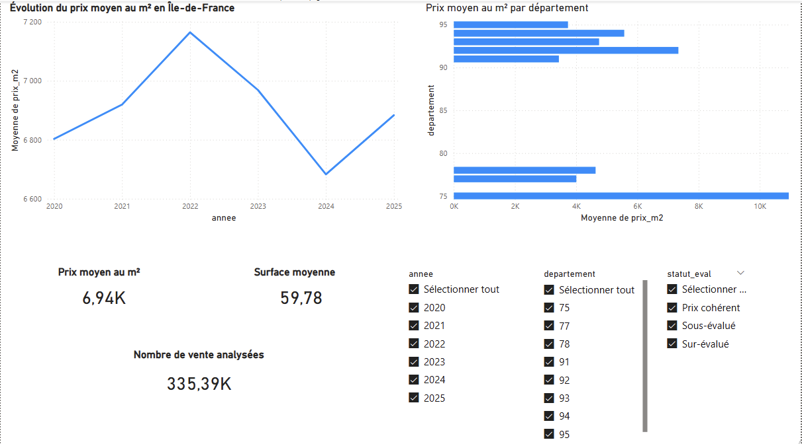
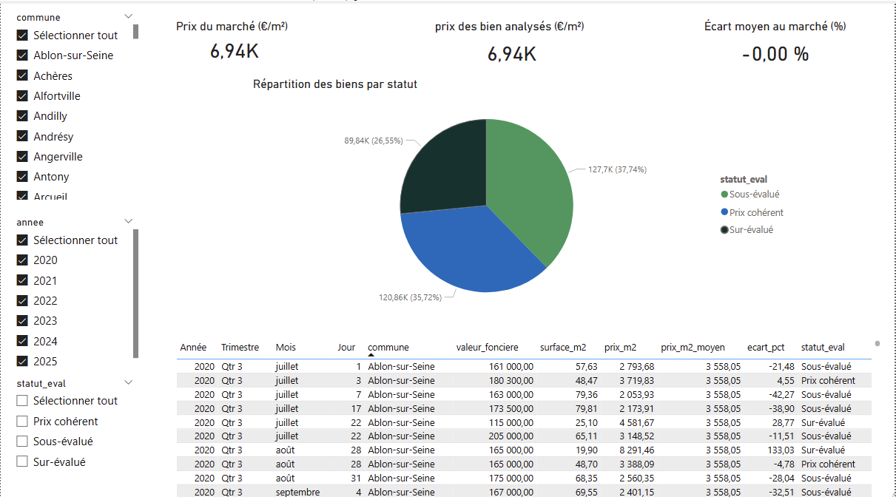
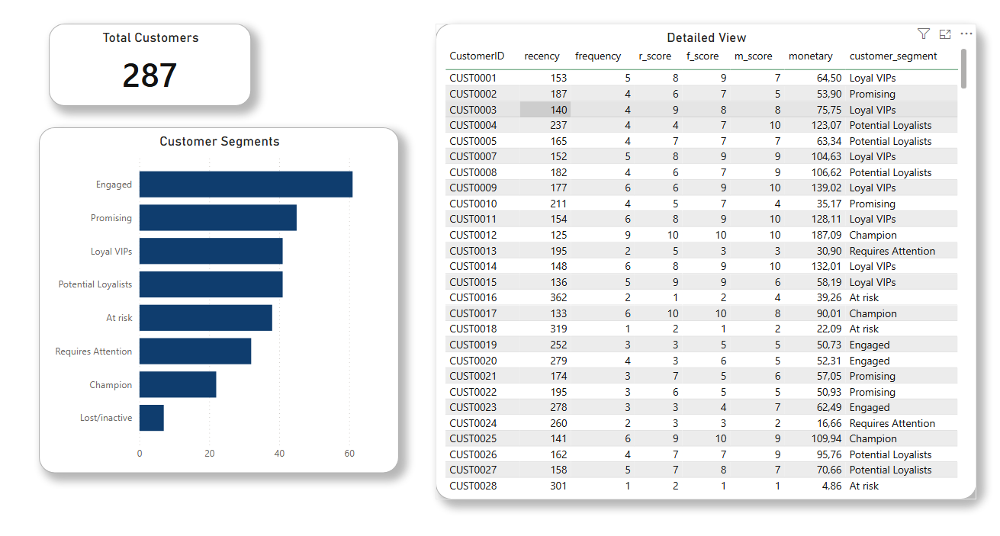

Mon Elevator Pitch
Étudiant en Mathématiques appliquées, statistiques et data science, je développe un profil orienté analyse de données, visualisation, modélisation statistique et business intelligence. Mon objectif est de rejoindre une équipe data en alternance afin de contribuer à des projets concrets d’aide à la décision.
À travers mes projets, j’ai travaillé sur toute la chaîne data : collecte, nettoyage, structuration, analyse exploratoire, création d’indicateurs, requêtes SQL, segmentation, ACP et tableaux de bord Power BI.
Je recherche une alternance à partir de septembre 2026, idéalement sur des missions de Data Analyst, Data Science, BI ou reporting décisionnel.
Compétences techniques
Analyse & statistiques
Statistiques descriptives, tests d’hypothèses, régression, ACP, analyse multivariée, séries temporelles.
Programmation
Python, R, SAS, SQL. Nettoyage de données, manipulation de tables, automatisation d’analyses.
Business Intelligence
Power BI, Excel, reporting, création d’indicateurs, dashboards interactifs et aide à la décision.
Bases de données
SQLite, MySQL, PostgreSQL, Google BigQuery. Agrégations, jointures, CTEs, fonctions fenêtre.
Mes projets data
Les projets ci-dessous sont présentés avec une logique professionnelle : contexte, objectif, données, méthodologie, résultats et livrables visuels.
Projet principal · Data Analyst / BI
Analyse du marché immobilier en Île-de-France — DVF 2020–2025
Ce projet analyse l’évolution des prix immobiliers en Île-de-France à partir des données officielles DVF entre 2020 et 2025. L’objectif est également de comparer chaque transaction au prix moyen du marché local par commune et par année afin d’identifier les biens sous-évalués, cohérents ou surévalués.
Objectifs
- Suivre l’évolution du prix moyen au m² en Île-de-France.
- Comparer les prix par département, commune et année.
- Construire un outil d’aide à la décision pour une agence immobilière.
- Attribuer automatiquement un statut d’évaluation à chaque transaction.
Méthodologie
- Préparation des données : import des fichiers DVF, nettoyage, suppression des valeurs aberrantes, calcul du prix au m².
- Modélisation SQL : création de tables, agrégations par commune/année, jointures avec les transactions.
- Évaluation : calcul de l’écart au marché local et classification en sous-évalué, prix cohérent ou sur-évalué.
- Visualisation : création de deux pages Power BI pour le pilotage marché et l’analyse transactionnelle.


Projet en cours · Cloud Data / BI
Customer Segmentation — BigQuery & Power BI
Ce projet répond à une problématique marketing : identifier les clients les plus précieux afin de prioriser les actions commerciales. Les données de ventes 2025 sont transformées dans Google BigQuery, puis connectées à Power BI pour créer un dashboard de segmentation client.
Pipeline analytique
- Consolidation des 12 tables de ventes mensuelles en une table annuelle.
- Calcul des métriques de récence, fréquence et montant d’achat par client.
- Attribution de scores R, F et M de 1 à 10 via déciles.
- Agrégation en score global, puis classification en 8 segments clients.

Segments clients
| Segment | Score total | Interprétation |
|---|---|---|
| Champion | ≥ 28 | Clients très récents, fréquents et à forte valeur. |
| Loyal VIPs | ≥ 24 | Clients fidèles et stratégiques. |
| Potential Loyalists | ≥ 20 | Clients à fort potentiel de fidélisation. |
| Promising | ≥ 16 | Clients prometteurs à accompagner. |
| At risk | ≥ 4 | Clients à risque de désengagement. |
Projet académique · R / SAS
Analyse de 167 stations de ski françaises
Projet réalisé dans le cadre de l’UE STA118 — Outils informatiques de la statistique. Il combine une première analyse exploratoire sous R et une analyse multivariée sous SAS sur un jeu de données décrivant 167 stations de ski françaises.
Résultats principaux
- Le département ayant le plus de stations est la Savoie (73) avec 42 stations.
- Les stations les moins hautes en moyenne se situent dans les Vosges (88), autour de 716 m.
- Sous SAS, le massif ayant l’altitude moyenne la plus faible est également les Vosges, avec 785,75 m.
- La première composante principale de l’ACP explique environ 52,62 % de l’inertie totale.
- Les deux premières composantes principales expliquent environ 62,75 % de l’information totale.
Analyse quantitative · R
Élections présidentielles 2022 — Tendances politiques régionales
Analyse des tendances politiques régionales en France métropolitaine à partir des résultats de l’élection présidentielle 2022. Le projet mobilise le nettoyage de données, les statistiques descriptives, les analyses bivariées et l’ACP pour comparer les profils départementaux.
Ma méthodologie data
Comprendre le besoin
Identifier la question métier, les utilisateurs finaux et les indicateurs réellement utiles.
Préparer les données
Nettoyer, structurer, contrôler la qualité et documenter les transformations.
Analyser & modéliser
Construire des indicateurs, comparer, segmenter, modéliser et interpréter les résultats.
Restituer clairement
Produire des dashboards et des visualisations compréhensibles pour faciliter la décision.
Parcours
Contact
Je suis disponible pour une alternance en Data Analyst / Data Science à partir de septembre 2026.